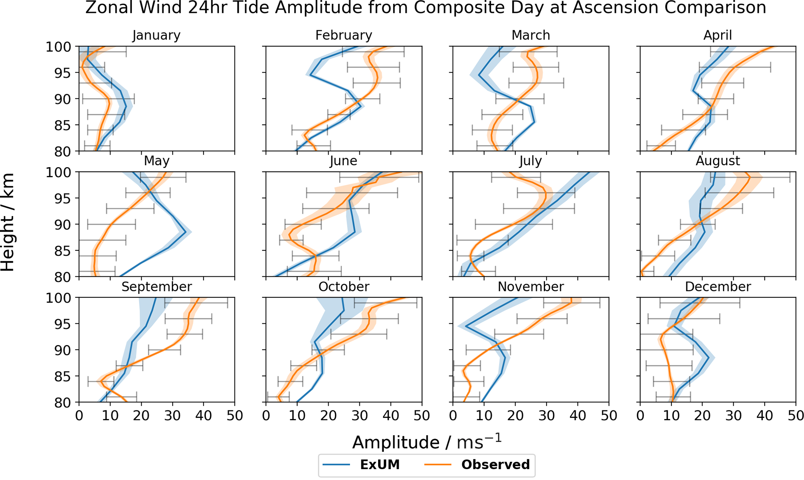

"The shaded regions denote the standard deviation from the curve-fitting algorithm, and the black bars indicate the standard deviation from the mean of the measured amplitudes across the month."

3. Next Steps
More Data
More plots requires more simulation data from other years. We have the radar data!
Improved regression parameter estimates needs more UM output points. eg hourly output.
- `$\tau$` chosen to be 24hours in keeping with Song et al. (2018)
- `$k \in [0,1]$` is a 'nudging ramp parameter'.
1D-CIRA
`$T_{profile}$` is based on climatological and satellite data:
- 70-86 km is based on the US Standard Atmosphere (USSA) (COESA, 1976).
- 86-119.7 km is based on the Committee on Space Research (COSPAR) International Reference Atmosphere (CIRA)
- 119.7+ km the temperature asymptotes to a selected exobase temperature (here 1000 K).